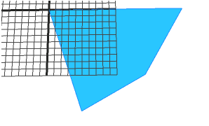
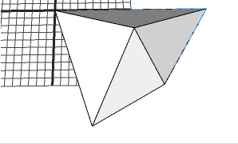

taper operation
Syntax
taper(height)
Parameters
- height (float)
How many units to extrude.
Description
Tapers the shape (i.e. forms a pyramid over a polygon). The first polygon of the first mesh in the geometry asset is taken and tapered along the face normal through the the polygon's center of gravity. The scope orientation is set in the following way:
- x-axis direction is kept as much as possible (old x-axis is projected to the face plane)
- y-axis along the face normal (taper direction)
- z-axis normal to the two above
The scope's sizes are adjusted to tighly fit the extruded geometry.
If height is < 0, the scope.sy attribute will be < 0 and the taper will be down-wards.
Component tags
The operation automatically applies semantic component tags to the resulting face components:
For more information on working with component tags, refer to: |
 |
Related
- envelope operation
- extrude operation
- offset operation
- roofGable operation
- roofHip operation
- roofPyramid operation
- roofRidge operation
- roofShed operation
Examples
 |
The initial shape which is a lot (= geometry with 1 face). |
 |
Lot--> taper(10)The tapered shape. |
Copyright ©2008-2024 Esri R&D Center Zurich. All rights reserved.